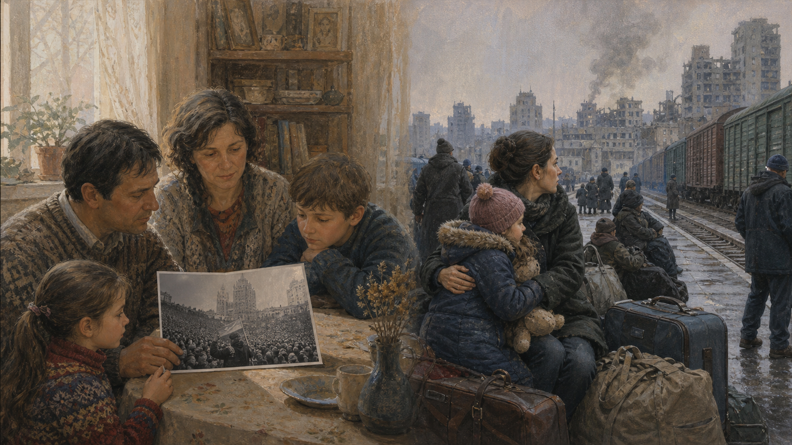
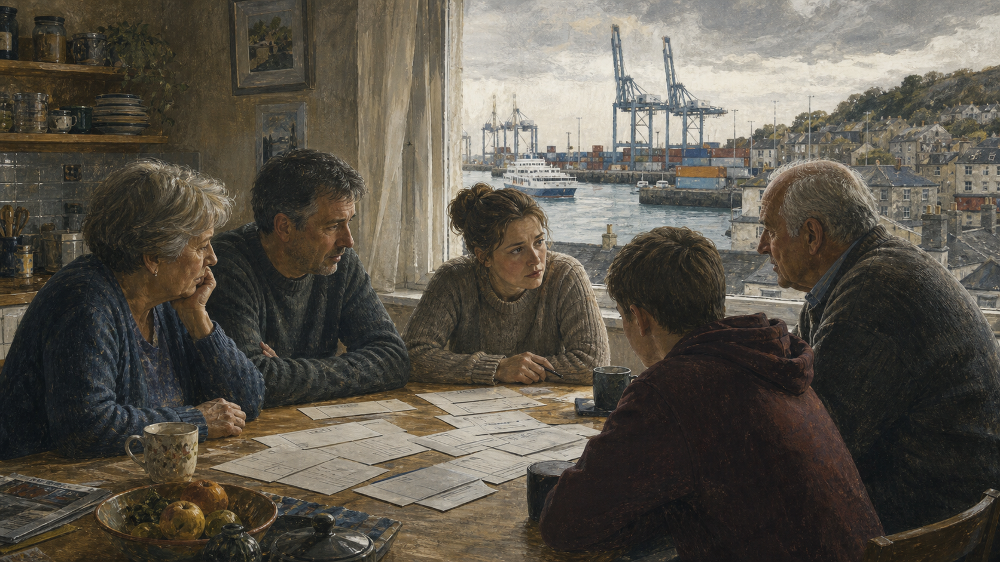
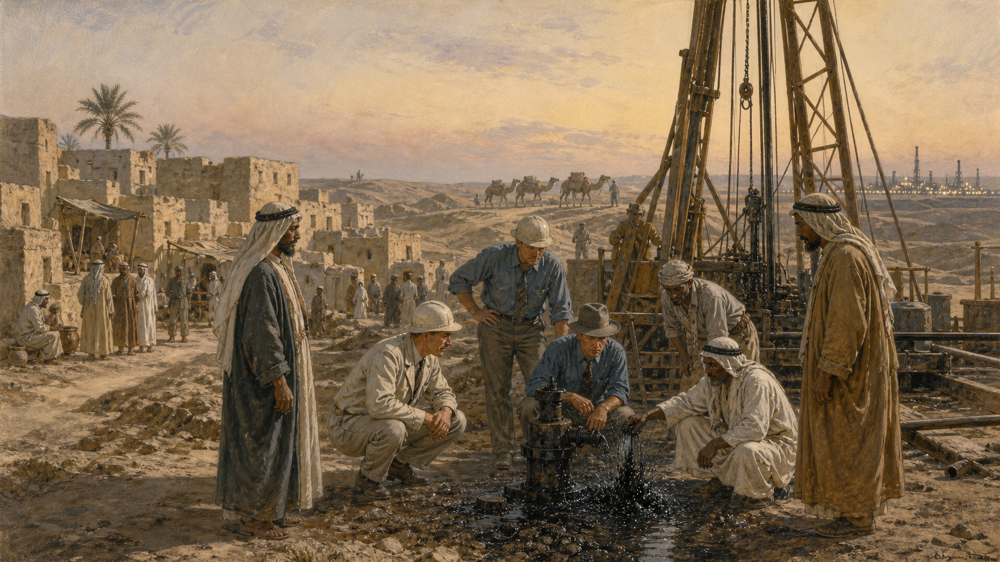
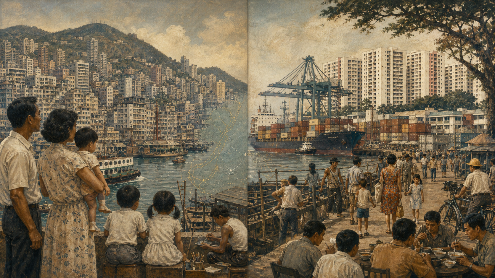
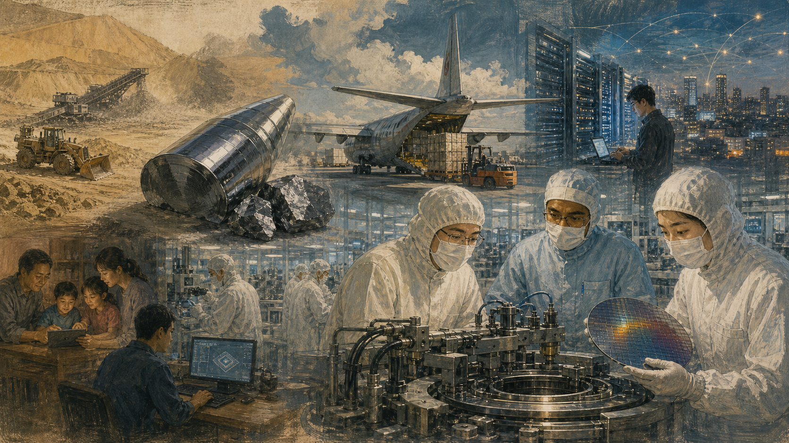
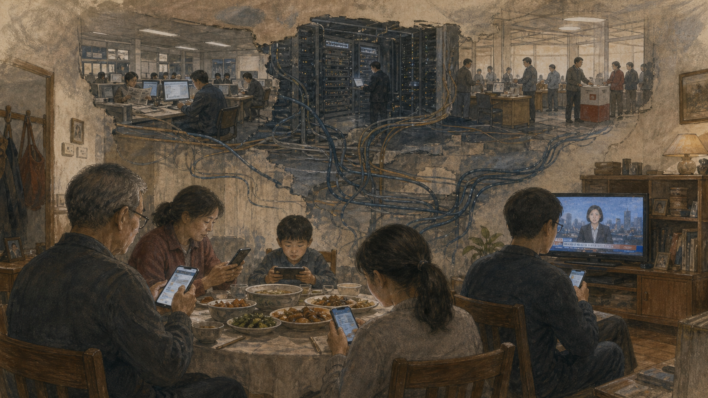
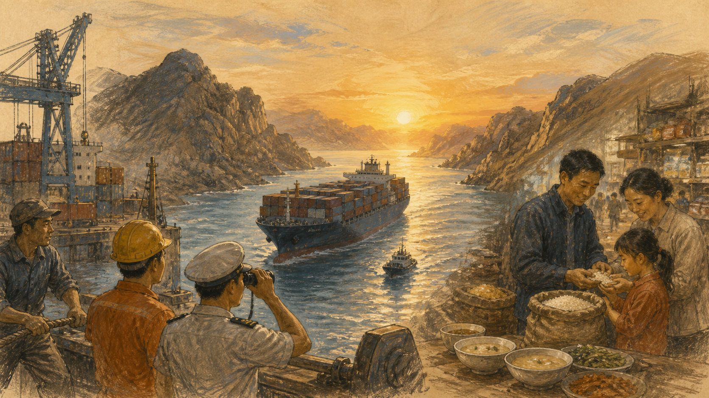
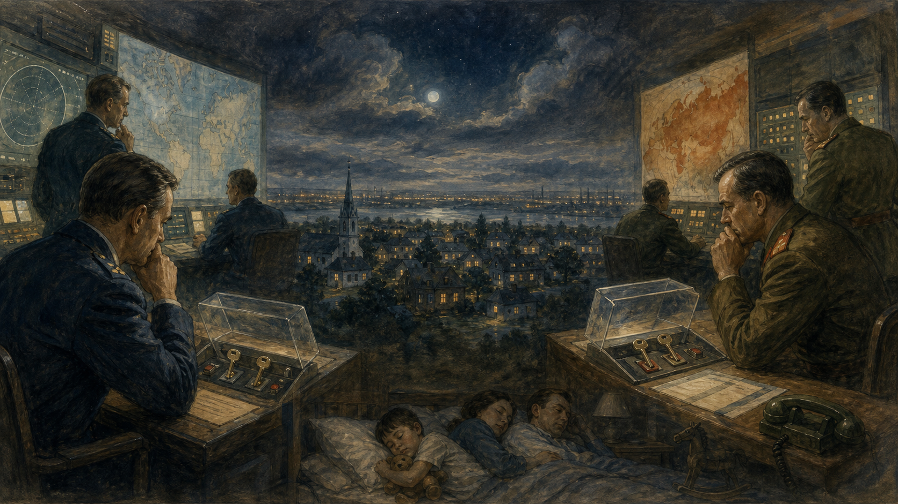

国家从哪里来
第1、2、6、9、20篇：边界、分裂、统一、民族记忆与台湾海峡。
战争怎样失控
第4、8、12、18、19篇：误判、航道、威慑与升级。
规则能做什么
第5、7、10、11、14、17篇：主权、联盟、贸易与公平。
看不见的权力
第3、13、15、16篇：能源、芯片、信息与算法怎样改变国家选择。
第一季 · 二十夜
建议按顺序阅读。每篇都有右侧边注、史料来源和父子讨论题；手机端边注会自动进入正文。

一片土地，两种归乡
以色列与巴勒斯坦：两个真实的归属感，怎样撞在同一片土地上。
开始阅读 →
一条纬线切开的民族
朝鲜与韩国为什么从共同历史走向两个国家、两套制度。
开始阅读 →
安全国家与普通人的生活
朝鲜的发展道路：战争记忆、体制安全、制裁与市场缝隙。
开始阅读 →
从帝国边疆到全球震荡
俄乌战争的历史来路，以及战场为何会抵达世界的粮仓和账单。
开始阅读 →
小国如何在大国之间站稳
新加坡怎样把港口、规则、国防与外交变成生存空间。
开始阅读 →
墙倒下以后
柏林墙的建立、倒塌，以及德国统一后漫长的经济与心理重建。
开始阅读 →
把主权交给共同规则
欧洲为什么从煤钢合作走向欧盟，又为何不断争论谁来作决定。
开始阅读 →
世界最危险的十三天
古巴导弹危机：真正拯救世界的，也许是犹豫、沟通与不服从。
开始阅读 →
一次分家留下的伤口
英属印度分治、克什米尔归属与印巴两国的安全困境。
开始阅读 →
拿回主权之后
英国脱欧：一句有力量的口号，如何遇到边境、贸易与身份现实。
开始阅读 →
谁控制世界的水门
苏伊士与巴拿马运河背后的帝国、主权与全球贸易。
开始阅读 →
看不见的线与真实航道
南海争议中的岛、礁、海洋法、渔民与大国竞争。
开始阅读 →
黑色财富改变国家命运
中东石油如何创造现代国家，也制造依赖、竞争与转型难题。
开始阅读 →
两座港城的不同选择
香港与新加坡怎样从相似港口条件走向不同制度道路。
开始阅读 →
一粒沙子里的世界权力
芯片产业为何成为国家安全、贸易规则与技术主权的核心。
开始阅读 →
看不见的战场
网络攻击、算法传播与认知战怎样进入每个人的屏幕。
开始阅读 →
谁减排，谁发展，谁付钱
气候外交不是一道科学选择题，而是一张历史责任账单。
开始阅读 →
一条航线如何抵达餐桌
印度洋、红海和海峡咽喉怎样影响运费、粮食与日常生活。
开始阅读 →
用最可怕的武器阻止战争
核威慑的冷酷逻辑、误判风险，以及裁军为什么如此困难。
开始阅读 →
台湾问题，海峡两岸为什么走到今天
从岛屿历史、战争分治、国际代表权与民主化，看见争议的来由和影响。
开始阅读 →这套文章怎样使用
先让孩子讲自己已经知道的版本，再一起读故事；遇到右侧边注时，不必全部停下。读完后各自挑一个讨论题，并尝试替自己不赞同的一方说出最强理由。目标不是在20天里记住所有年份，而是养成一种习惯：每当新闻要求你立刻站队，先问事件从哪里来，谁在承担代价，证据是否足够，还有哪一种解释被省略了。